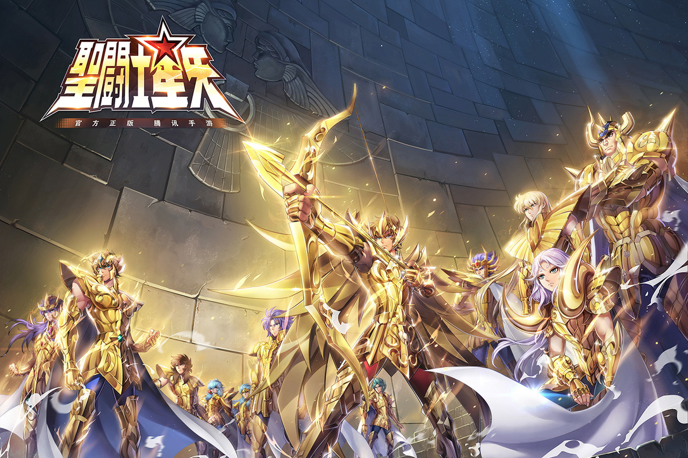
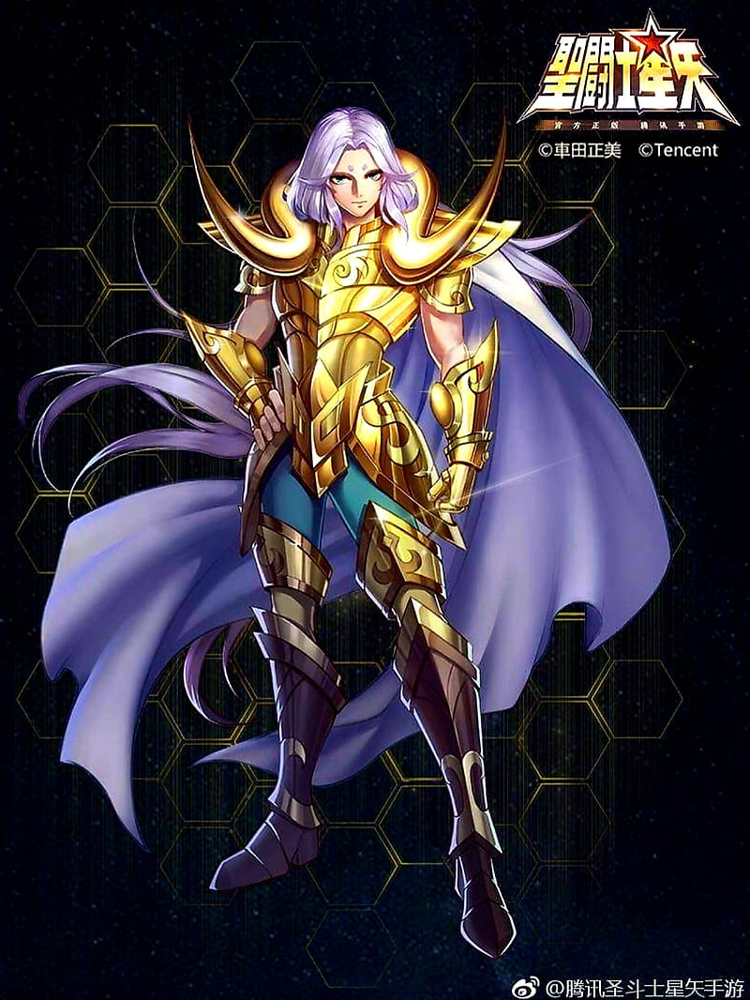
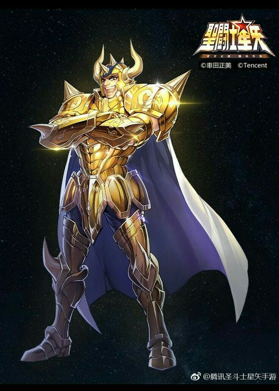
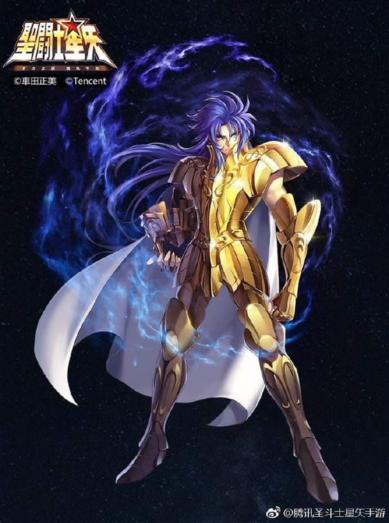

Santos Dorados

Los caballeros dorados es la orden más poderosa del ejército de Athena, debido al manejo del último cosmos, el séptimo sentido. Se componen principalmente por 12 guerreros que portan armaduras doradas que representan los signos de las constelaciones de la eclíptica, curva por donde transcurre el sol. sus armaduras están hechas de oricalco, polvo de estrellas y bañadas de la luz del sol, lo cual le dan su tonalidad dorada y la vez son las más resistentes capaces de aguantar el cero absoluto.
Primera casa - Mu De Aries

Caballero de la primera casa, portador de la armadura dorada de aries. Maestro de la herrería y reparación de las armaduradas de sus compañeros. Conocedor de técnicas tanto ofensivas como la EXTINCION ESTELAR y defensivas como el MURO DE CRISTAL. Alumno del anterior caballero de aries y ultimo líder de los santos de Athena Shion de Aries.
Segunda casa - Aldebaran De Tauro

Guardian de la segunda casa del santuario. El más fuerte físicamente de los 12 caballeros dorados. El más sereno y alegre de sus compañeros. Su técnica conlleva en mantener una postura firme en la cual siempre tiene su defensa en alto y al momento de ejecutarla libera el GRAN CUERNO un golpe de energía a tal velocidad que sus enemigos no pueden esquivar, concediéndole una victoria inmediata.
Tercera casa - Saga De Geminis



Adorado como un dios nacido en la tierra, Saga es el caballero guardian de la tercera casa del santuario. Es considerado como el mas poderoso de sus compañeros como todos los geminis que nacieron a traves de la historia. A pesar de su personalidad bondadosa, Saga oculta un lado oscuro que le es dificil de controlar, lo que a causado el sufrimiento de sus pares por obtener el poder absoluto del santuario. Tras perder la oportunidad de convertirce el sucesor de Shion de Aries como proximo Gran Patriarca, su lado oscuro se apodera de el, asesinando a su maestro y querer matar la reencarnacion de la diosa athena, pero Aioros de Sagitario lo descubre en el acto y rescata la bebe haciendo que huya con ella. Saga con las tunicas y mascara del patriarca tilda a Aioros de traidor haciendo que sus compañeros le de cazan y acaben con el, dejandolo como el lider del santuario. Saga al posee poderosas habilidad comoo SATAN IMPERIALque puede corromper la mente de su victima.OTRA DIMENSION capaz de alterar el espacio a su alredor y enviar a sus victimas a otra realidad o lugar. Y su tecnica mas poderosa EXPLOSION DE GALAXIAS